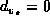

Data Structures and Algorithms
with Object-Oriented Design Patterns in Java
Data Structures and Algorithms
with Object-Oriented Design Patterns in Java
Dijkstra's algorithm
is a greedy algorithm for solving
the single-source, shortest-path problem on an edge-weighted graph
in which all the weights are non-negative.
It finds the shortest paths from some initial vertex, say  ,
to all the other vertices one-by-one.
The essential feature of Dijkstra's algorithm
is the order in which the paths are determined:
The paths are discovered in the order of their weighted lengths,
starting with the shortest, proceeding to the longest.
,
to all the other vertices one-by-one.
The essential feature of Dijkstra's algorithm
is the order in which the paths are determined:
The paths are discovered in the order of their weighted lengths,
starting with the shortest, proceeding to the longest.
For each vertex v,
Dijkstra's algorithm keeps track of three pieces of information,
 , , and :
, , and :
Initially, for all such that , while .
Initially, is unknown for all .
Dijkstra's algorithm proceeds in phases. The following steps are performed in each pass:
Table  illustrates the operation of Dijkstra's
algorithm as it finds the shortest paths starting from vertex b
in graph
illustrates the operation of Dijkstra's
algorithm as it finds the shortest paths starting from vertex b
in graph  shown in Figure .
shown in Figure .
| passes | |||||||||||||||||||||||||||||||||||
|
vertex | initially | 1 | 2 | 3 | 4 | 5 | 6 | ||||||||||||||||||||||||||||
| a | | 3 | b | 3 | b | 3 | b | 3 | b | 3 | b | 3 | b | ||||||||||||||||||||||
| b | 0 | -- | 0 | -- | 0 | -- | 0 | -- | 0 | -- | 0 | -- | 0 | -- | |||||||||||||||||||||
| c | | 5 | b | 4 | a | 4 | a | 4 | a | 4 | a | 4 | a | ||||||||||||||||||||||
| d | | | | 6 | c | 6 | c | 6 | c | 6 | c | ||||||||||||||||||||||||
| e | | | | 8 | c | 8 | c | 8 | c | 8 | c | ||||||||||||||||||||||||
| f | | | | | 11 | d | 9 | e | 9 | e | |||||||||||||||||||||||||
Initially all the tentative distances are  ,
except for vertex b which has tentative distance zero.
Therefore, vertex b is selected in the first pass.
The mark beside an entry in Table
indicates that the shortest path is known ( ).
,
except for vertex b which has tentative distance zero.
Therefore, vertex b is selected in the first pass.
The mark beside an entry in Table
indicates that the shortest path is known ( ).
Next we follow the edges emanating from vertex b,
 and ,
and update the distances accordingly.
The new tentative distances for a becomes 3
and the new tentative distance for c is 5.
In both cases, the next-to-last vertex on the shortest path is vertex b.
and ,
and update the distances accordingly.
The new tentative distances for a becomes 3
and the new tentative distance for c is 5.
In both cases, the next-to-last vertex on the shortest path is vertex b.
In the second pass, vertex a is selected and
its entry is marked with indicating the shortest path is known.
There is one edge emanating from a, .
The distance to c via a is 4.
Since this is less than the tentative distance to c,
vertex c is given the new tentative distance 4
and its predecessor on the shortest-path is set to a.
The algorithm continues in this fashion
for a total of  passes
until all the shortest paths have been found.
passes
until all the shortest paths have been found.
The shortest-path information contained in the right-most column
of Table
can be represented in the form of a vertex-weighted graph
as shown in Figure .
Figure: The shortest-path graph for  .
.
This graph contains the same set of vertices as the problem graph  .
Each vertex v is labeled with the length
of the shortest path from b to v.
Each vertex (except b) has a single emanating edge
that connects the vertex to the next-to-last vertex on the shortest-path.
By following the edges in this graph from any vertex v to vertex b,
we can construct the shortest path from b to v in reverse.
.
Each vertex v is labeled with the length
of the shortest path from b to v.
Each vertex (except b) has a single emanating edge
that connects the vertex to the next-to-last vertex on the shortest-path.
By following the edges in this graph from any vertex v to vertex b,
we can construct the shortest path from b to v in reverse.
 Copyright © 1998 by Bruno R. Preiss, P.Eng. All rights reserved.
Copyright © 1998 by Bruno R. Preiss, P.Eng. All rights reserved.